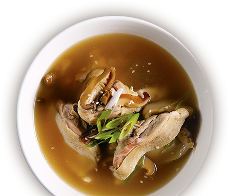
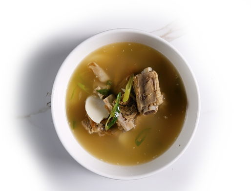
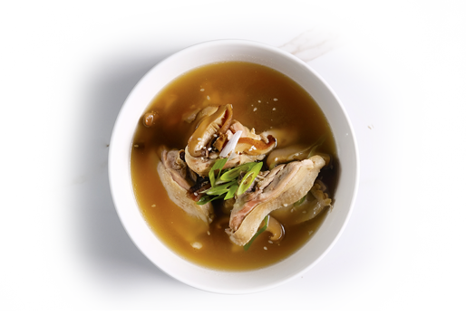

메인 메뉴
chapter 5
Soups
스프
모든 요리에는 후식이 무료로 제공됩니다
(쿠키아이스크림 or 커피,녹차,허브차)

Pork Ribs 350
포크립 스프
Ribs, Rice Cake Chicken Stock
돼지갈비와 쌀떡을 닭육수로
끓인 국요리

Chicken 350
치킨 스프
Leg & Thigh, Rice Cake, Dried Mushrooms, Chicken Stock
닭다리와 쌀떡, 버섯을
닭육수로 끓인 국 요리
